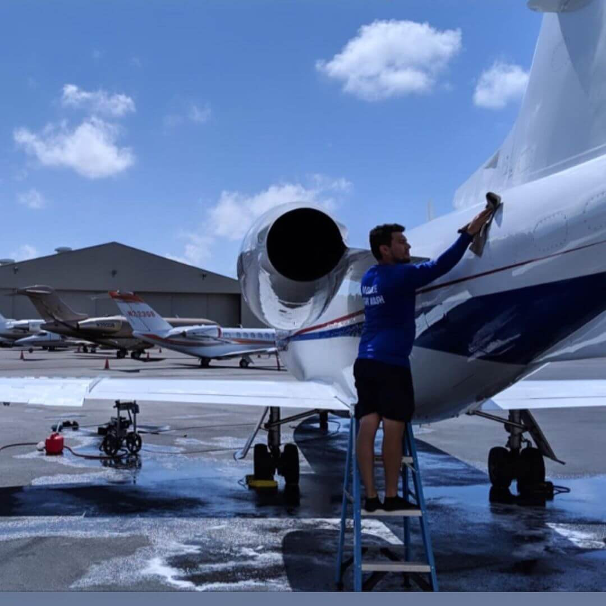
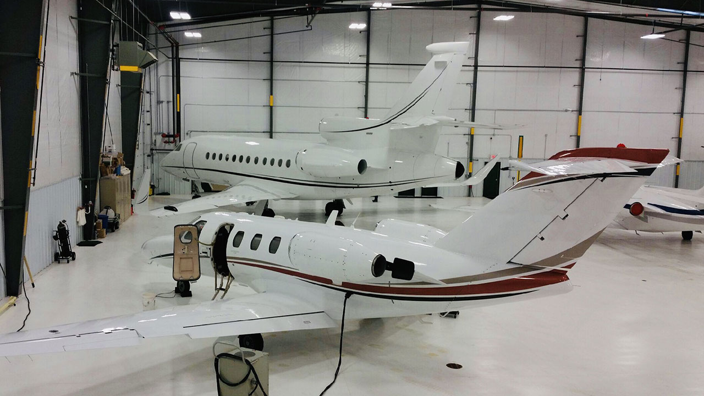
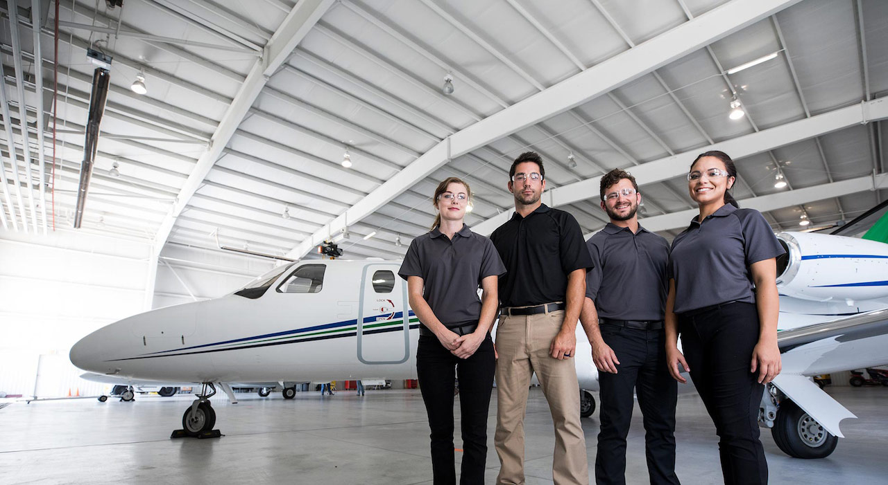
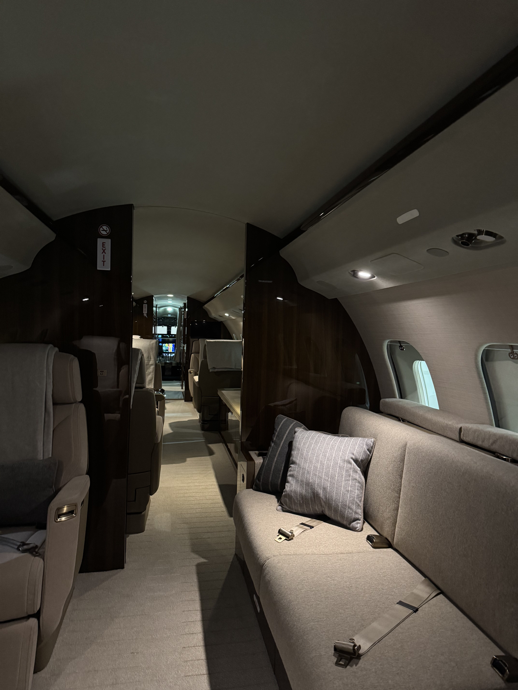
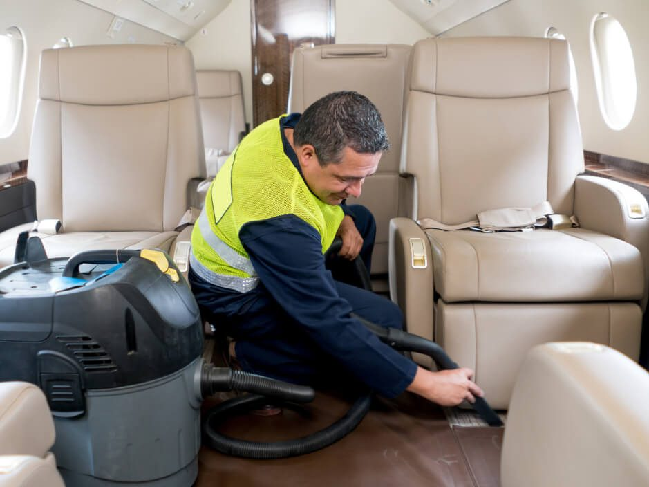

Our Services
We provide a comprehensive range of aircraft detailing services designed to maintain the cleanliness, appearance, and surface integrity of private, corporate, and charter aircraft. Our work includes full interior cleaning and cabin detailing, covering seating, carpeting, lavatories, galleys, cockpit surfaces, and interior glass using aviation-safe, non-abrasive methods. Exterior services include complete aircraft washing, fuselage and wing cleaning, leading-edge decontamination, belly and landing gear cleaning, and windshield care using aircraft-approved materials designed for acrylic and sensitive aircraft surfaces.
In addition to standard cleaning services, we offer advanced surface care and restoration options to support long-term aircraft maintenance and presentation standards. These include brightwork and metal polishing, paint decontamination and enhancement treatments, ceramic coating application and maintenance, and specialized deep-cleaning services for heavily used aircraft. Our service structure is designed to scale with operator needs, providing both routine maintenance support and higher-level restoration capabilities while maintaining consistency, safety, and operational readiness across all aircraft types.

About Us
Our team brings combined experience across aerospace, mechanical systems, and surface detailing operations:
- Aerospace R&D experience in advanced aviation systems and AI-assisted aircraft development
- Multi-year automotive detailing and surface restoration background
- Mechanical and tooling expertise for precision maintenance workflows
- Marketing and operational development experience in service-based industries

Aero Smiths Aviation
Aircraft Detailing & Cleaning Service
We deliver high-standard aircraft detailing solutions designed to support private,
corporate, and charter operators with consistent quality,
operational reliability, and aviation-safe surface care across mobile service regions in
North Carolina.
We aim to redefine aircraft detailing through mobile, responsive service models that prioritize
safety, professionalism, and scalability
while expanding from foundational cleaning services into advanced aircraft surface care solutions.
Trustworthy • Responsive • Reliable • Aviation-Safe Systems

Operating Regions
We currently operate mobile units across:
- Cape Fear Region (Wilmington / ILM)
- Raleigh–Durham Aviation Corridor (RDU)

Contact Us
Our mailing address, for payments and other correspondence:
Nicolas Saffo
Aero Smiths Aviation LLC
P.O. Box XXXXX
Wilmington, Nc 28480
Phone: 910.408.8501
Email: aerosmithsaviation@gmail.com